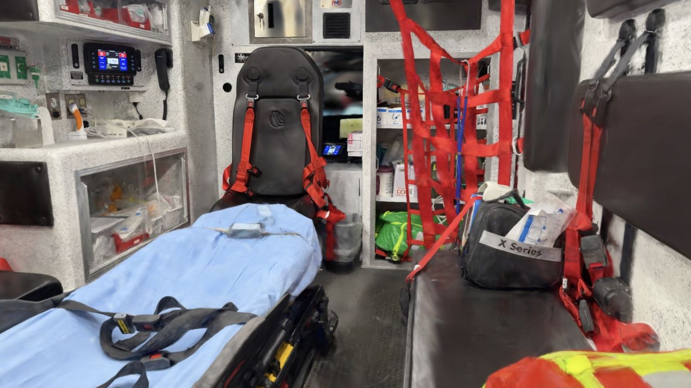
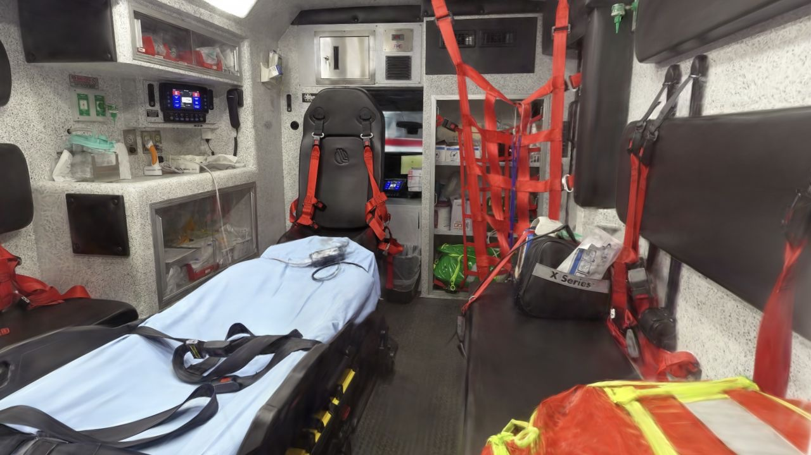
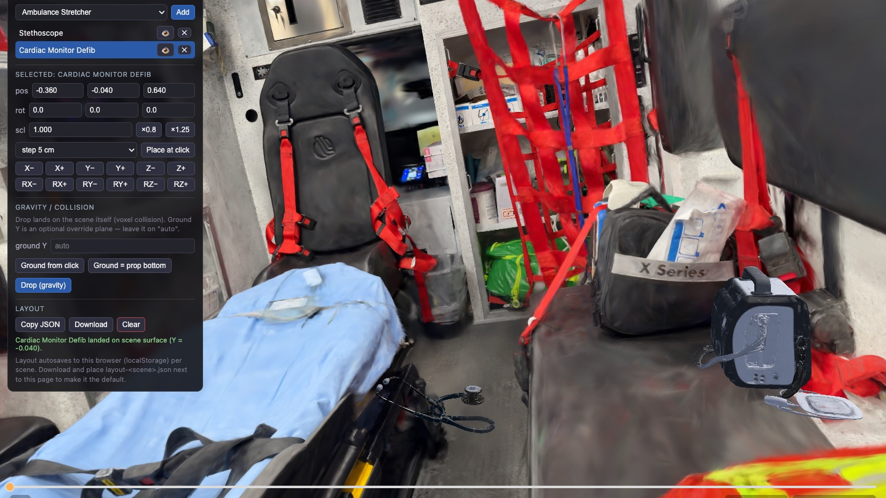
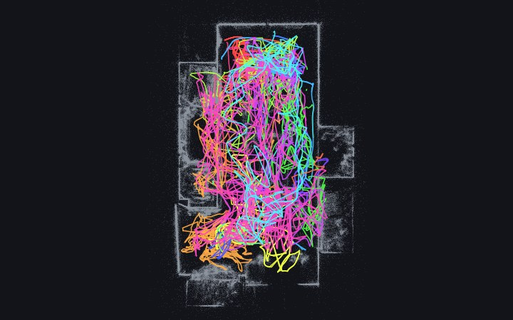

3DGS Health Scenes
Interactive 3D Gaussian Splatting reconstructions of health-care and indoor environments, trained with gsplat and viewable directly in the browser — orbit, pan, and zoom in real time. No plugins or downloads required beyond the scene data itself.
Each viewer streams its scene on first open — the download size is listed on every card. A WebGL2-capable browser is required; recent Chrome, Safari, Firefox, and Edge all work, on desktop and mobile.

▶ Open interactive viewerAmbulance
Interior of an ambulance, reconstructed from video. Explore the patient compartment, equipment mounts, and cabinetry in full 3D.

▶ Open interactive viewerAmbulance — Insta360 capture
The same ambulance captured with an Insta360 camera. Smaller scene with view-dependent color (SH degree 3). Opens at the supply cabinet and attendant seat.

▶ Open interactive viewerProps Lab
Place 3D medical equipment props — stethoscope, monitor, stretcher, and more — inside the splat scenes. Drop them with gravity onto real scene surfaces, adjust pose and scale, and export the layout as JSON.

▶ Open interactive viewerSfM Review — Ambulance
The camera solve behind the ambulance scene: 8075 registered images across 18 clips, levelled so +Z is up. Scrub the capture, check per-frame continuity, and toggle coverage grids showing how well the ceiling and floor were filmed.